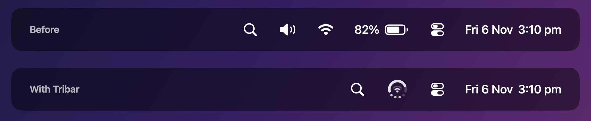
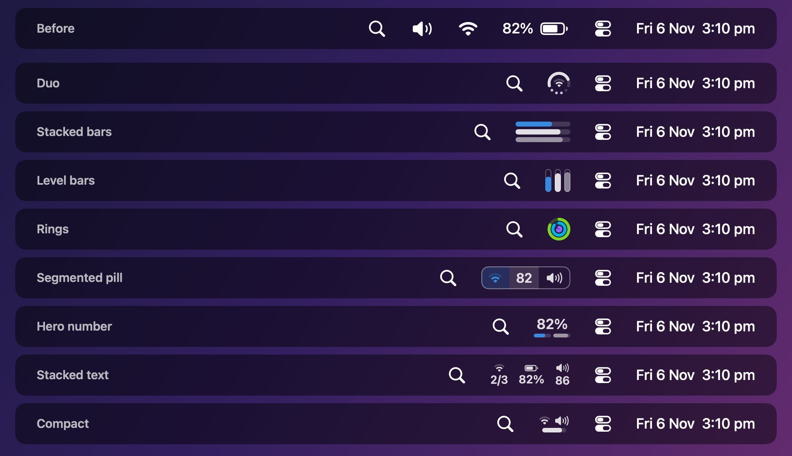
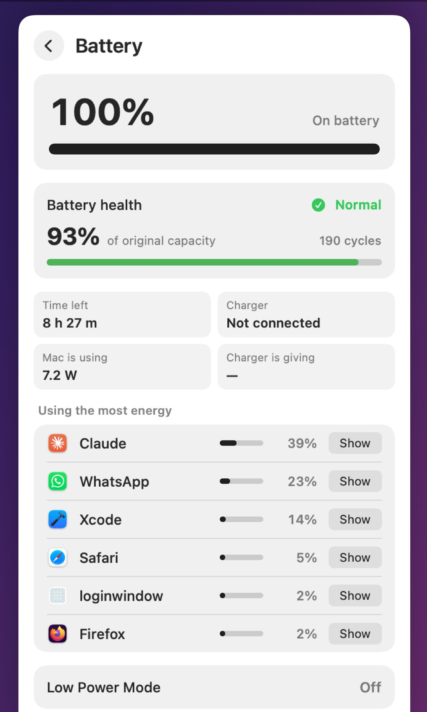
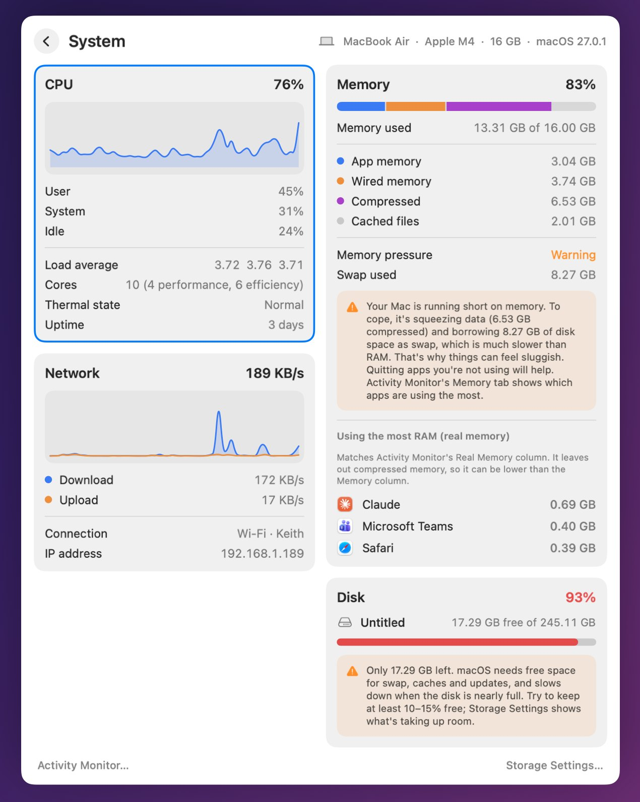

Three menu bar icons. One spot.
Tribar replaces the battery, Wi-Fi and volume icons with one icon you can read at a glance, so there’s room for the rest, even beside the notch.
Free download. Pro unlock is a one-time purchase.

- Replaces
- Battery, Wi-Fi, volume
- Faces
- 8 to choose from
- Idle CPU
- Under 1%
- Data collected
- None
- Requires
- macOS 14 or later
- Price
- Free, Pro US$3.99 once
Pick the face you read fastest.
Every face fits battery, Wi-Fi and volume into the space of one icon. With Pro, choose what each part shows: CPU, memory, disk or your lowest accessory battery.

Click it for everything else.
The dropdown has a page for each part of your Mac, and the pages do things.
Battery
Charge and time left, battery health and cycle count, charger wattage, live power draw and the apps using the most energy.
Wi-Fi
See nearby networks and switch with a click. With Pro, fall back to your iPhone hotspot when Wi-Fi drops.
Bluetooth
Battery levels for your Magic Keyboard, Mouse and Trackpad. Connect or disconnect any paired device.
System
CPU, memory, network and disk with two-minute graphs, and the apps using the most memory.


Free does the job. Pro makes it yours.
Pro is one purchase, US$3.99, that unlocks on all your Macs and is shared with your family.
| Feature | Free | Pro |
|---|---|---|
| One icon for battery, Wi-Fi and volume | Yes | Yes |
| The full dropdown, Wi-Fi switching, Bluetooth connect | Yes | Yes |
| Faces | Duo, Compact | All 8 |
| Any stat in any part of the icon | – | Yes |
| Monochrome and Vivid colours | – | Yes |
| Events: the icon shows what just changed | – | Yes |
| Energy warnings | – | Yes |
| Wi-Fi backup to your hotspot | – | Yes |